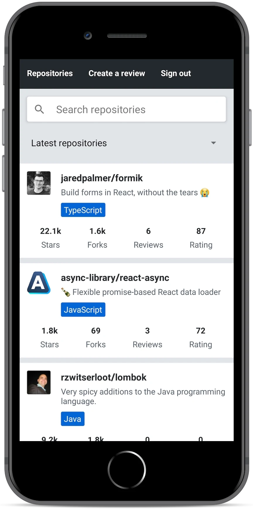
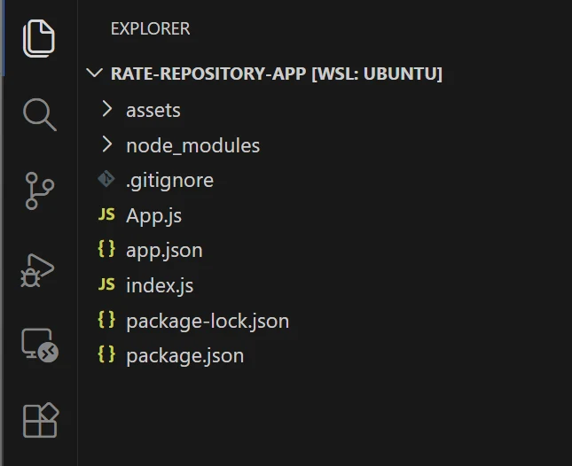
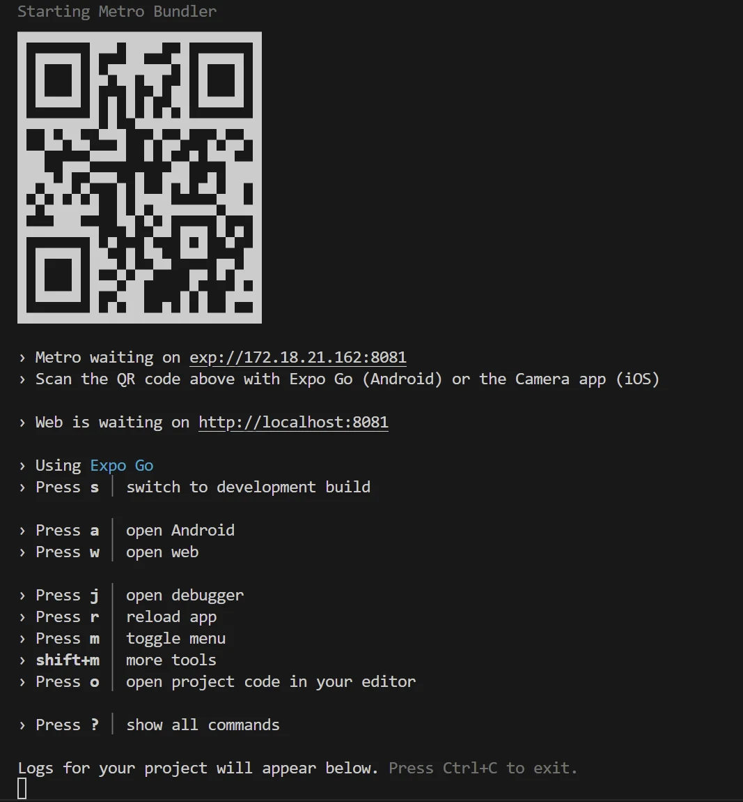
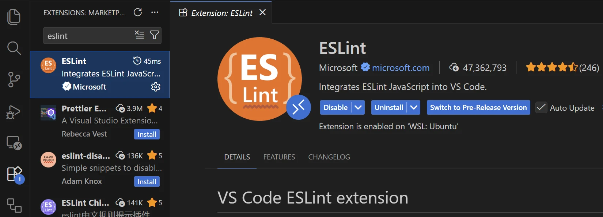
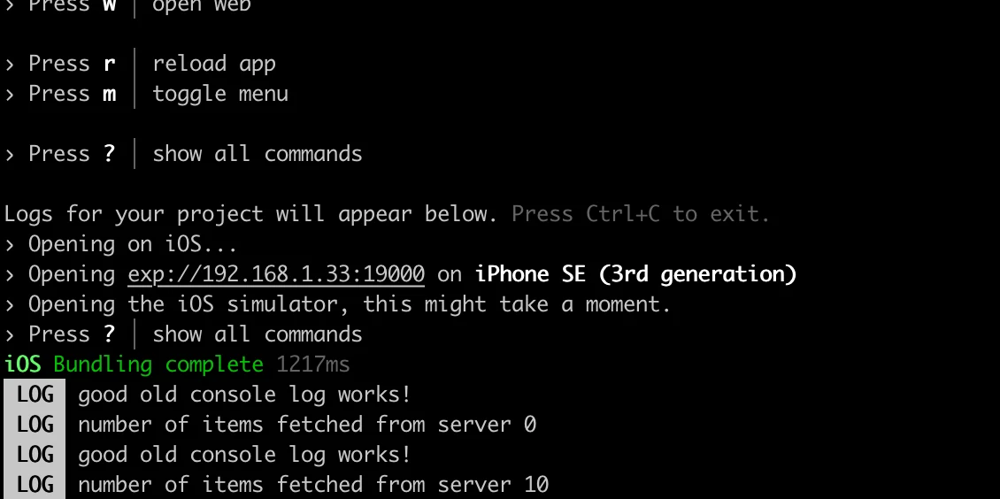
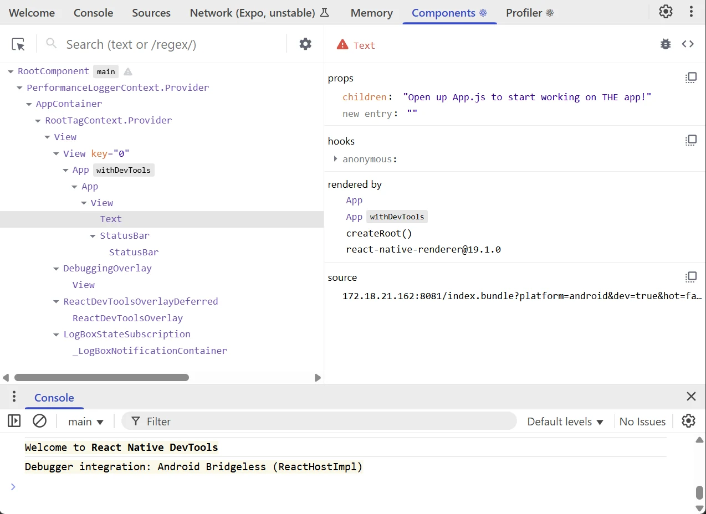

مقدمة إلى React Native
تقليدياً، تطلّب تطوير تطبيقات iOS وAndroid الأصلية من المطوّر استخدام لغات برمجة وبيئات تطوير خاصة بكل منصة. فبالنسبة لتطوير iOS، يعني ذلك استخدام Objective C أو Swift، وبالنسبة لتطوير Android استخدام لغات قائمة على JVM مثل Java أو Scala أو Kotlin. ومن الناحية التقنية، يتطلب إصدار تطبيق للمنصتين معاً تطوير تطبيقين منفصلين بلغات برمجة مختلفة. وهذا يستلزم موارد تطوير كبيرة.
أحد الأساليب الشائعة لتوحيد التطوير الخاص بكل منصة كان استخدام المتصفح كمحرّك عرض. Cordova من أشهر المنصات لبناء التطبيقات متعددة المنصات. فهي تتيح تطوير تطبيقات متعددة المنصات باستخدام تقنيات الويب القياسية: HTML5 وCSS3 وJavaScript. غير أن تطبيقات Cordova تعمل داخل نافذة متصفح مضمّنة في جهاز المستخدم. ولهذا لا تستطيع هذه التطبيقات تحقيق أداء التطبيقات الأصلية ولا مظهرها وإحساسها، وهي التطبيقات التي تستخدم مكوّنات واجهة مستخدم أصلية فعلية.
React Native إطار عمل لتطوير تطبيقات Android وiOS الأصلية باستخدام JavaScript وReact. وهو يوفّر مجموعة من المكوّنات متعددة المنصات التي تستخدم خلف الكواليس المكوّنات الأصلية للمنصة. ويتيح لنا استخدام React Native جلب كل الميزات المألوفة في React مثل JSX والمكوّنات وprops والحالة والخطافات إلى تطوير التطبيقات الأصلية. وفوق ذلك، يمكننا الاستفادة من العديد من المكتبات المألوفة في منظومة React مثل React Redux، Apollo، React Router وغيرها الكثير.
تُعدّ سرعة التطوير والمنحنى التعليمي اللطيف للمطورين المألوفين مع React من أهم مزايا React Native. وإليك اقتباساً تحفيزياً من مقال Coinbase بعنوان Onboarding thousands of users with React Native حول مزايا React Native:
لو أردنا اختصار مزايا React Native في كلمة واحدة، لكانت «السرعة». ففي المتوسط، تمكّن فريقنا من تأهيل المهندسين في وقت أقل، ومشاركة مزيد من الشيفرة (وهو ما نتوقع أن يؤدي إلى تعزيز الإنتاجية مستقبلاً)، وفي النهاية تقديم الميزات بوتيرة أسرع مما لو اتبعنا نهجاً أصلياً بحتاً.
عن هذا الجزء
خلال هذا الجزء، سنطوّر تطبيقاً لتقييم مستودعات GitHub. وسيتضمن تطبيقنا ميزات مثل ترتيب المستودعات المُقيَّمة وتصفيتها، وتسجيل مستخدم، وتسجيل الدخول، وإنشاء تقييم لمستودع. وستُوفَّر لنا الواجهة الخلفية للتطبيق حتى نركّز فقط على تطوير React Native.
بُني هذا الجزء على فكرة أن تطوّر تطبيقك بينما تتقدّم في المادة. لذا لا تنتظر حتى التمارين لتبدأ التطوير. بل طوّر تطبيقك بالوتيرة نفسها التي تتقدّم بها المادة.
ستبدو النسخة النهائية من تطبيقنا شيئاً كهذا:

تهيئة التطبيق
للبدء بتطبيقنا نحتاج إلى إعداد بيئة التطوير لدينا. تعلمنا من الأجزاء السابقة أن هناك أدوات مفيدة لإعداد تطبيقات React بسرعة مثل Vite. ولحسن الحظ، لدى React Native أدوات من هذا النوع أيضاً.
لتطوير تطبيقنا، سنستخدم Expo. وExpo منصة تسهّل إعداد تطبيقات React Native وتطويرها وبناءها ونشرها. ولدى Expo بعض القيود مقارنةً بـ React Native CLI العادي. غير أن هذه القيود لا تؤثر في التطبيق المُنفَّذ في المادة.
لنبدأ مع Expo بتهيئة مشروعنا باستخدام create-expo-app:
npx create-expo-app rate-repository-app --template blank@sdk-55
لاحظ أن
@sdk-55يضبط إصدار Expo SDK للمشروع على 55. ينبغي أن تستخدم هذا الإصدار بالتحديد أثناء متابعة هذه المادة.
بعد ذلك، لننتقل إلى مجلد rate-repository-app المنشأ باستخدام الطرفية ونثبّت بعض الاعتماديات التي سنحتاجها قريباً:
npx expo install react-native-web react-dom @expo/metro-runtime
الآن بعد أن هُيّئ تطبيقنا، افتح مجلد rate-repository-app المنشأ باستخدام محرّر مثل Visual Studio Code. وينبغي أن تكون البنية على النحو التالي تقريباً:

قد نلاحظ بعض الملفات والمجلدات المألوفة مثل package.json و node_modules. وفوق ذلك، فإن الملفين الأكثر أهمية هما ملف app.json الذي يحتوي على إعدادات متعلقة بـ Expo، وملف App.js وهو المكوّن الجذري لتطبيقنا. لا تُعِد تسمية ملف App.js أو تنقله لأن Expo يستورده افتراضياً من أجل تسجيل المكوّن الجذري.
لنلقِ نظرة على قسم scripts في ملف package.json الذي يحتوي على السكربتات التالية:
{
// ...
"scripts": {
"start": "expo start",
"android": "expo start --android",
"ios": "expo start --ios",
"web": "expo start --web"
},
// ...
}
لنشغّل الآن السكربت npm start

إذا فشل السكربت بخطأ فالمشكلة على الأرجح في إصدار Node لديك. وفي حال واجهت مشكلات، انتقل إلى الإصدار 22.
يشغّل الأمر خادم تطوير Expo (Expo CLI). ويستخدم الخادم حزمة Metro التي تجمع JavaScript وتقدّمها للتطبيق. ولدى واجهة سطر الأوامر مجموعة مفيدة من الأوامر لعرض سجلات التطبيق وتشغيل التطبيق في محاكي أو على جهاز فعلي (مثلاً باستخدام Expo Go). سنصل إلى المحاكيات وExpo Go قريباً، لكن أولاً لنفتح تطبيقنا في المتصفح.
تقترح واجهة سطر أوامر Expo بضع طرق لفتح تطبيقنا. لنضغط المفتاح "w" في نافذة الطرفية لفتح التطبيق في المتصفح. وينبغي أن نرى قريباً النص المعرّف في ملف App.js في نافذة المتصفح. افتح ملف App.js بمحرّر وأجرِ تغييراً صغيراً على النص في مكوّن Text. وبعد حفظ الملف، ينبغي أن تظهر التغييرات عادةً تلقائياً بفضل التحديث السريع (Fast Refresh).
إعداد الأجهزة الافتراضية
ألقينا النظرة الأولى على تطبيقنا باستخدام عرض Expo في المتصفح. ومع أن عرض المتصفح قابل للاستخدام تماماً، فإنه يبقى محاكاة ضعيفة إلى حد كبير للبيئة الأصلية. لنلقِ نظرة على البدائل المتاحة لنا فيما يخص بيئة التطوير.
يمكن محاكاة أجهزة Android وiOS مثل الأجهزة اللوحية والهواتف في الحواسيب باستخدام محاكيات مخصصة. وهذا مفيد جداً لتطوير التطبيقات الأصلية. ويمكن لمستخدمي macOS استخدام محاكيات Android وiOS معاً على حواسيبهم. أما مستخدمو أنظمة التشغيل الأخرى، مثل Linux وWindows، فعليهم الاكتفاء بمحاكيات Android. بعد ذلك، وتبعاً لنظام تشغيلك، اتبع إحدى هذه التعليمات لإعداد محاكٍ:
- إعداد محاكي Android باستخدام Android Studio (أي نظام تشغيل)
- إعداد محاكي iOS باستخدام Xcode (نظام macOS)
عندما تنتهي من إعداد المحاكي، شغّله حتى ترى الجهاز الافتراضي على شاشتك. ثم شغّل Expo CLI كما فعلنا سابقاً بتنفيذ npm start. وتبعاً للمحاكي الذي تشغّله، اضغط إما المفتاح المقابل لـ "فتح Android" أو "فتح محاكي iOS". وبعد الضغط على المفتاح، ينبغي أن يتصل Expo بالمحاكي وأن ترى التطبيق في النهاية داخل المحاكي. تحلَّ بالصبر، فقد يستغرق هذا بعض الوقت.
استخدام هاتفك الخاص مع Expo Go
إضافةً إلى المحاكيات، هناك طريقة مفيدة للغاية لتطوير تطبيقات React Native باستخدام Expo: تطبيق Expo Go. فباستخدام Expo Go، يمكنك معاينة تطبيقك على جهازك المحمول الفعلي، وهو ما يمنح تجربة تطوير أكثر واقعية بقليل مقارنةً بالمحاكيات.
ينبغي أن يطابق الإصدار الرئيسي من Expo Go إصدار Expo SDK المستخدم، وهو في هذه الحالة 55. وقد تدعم بعض إصدارات Expo Go أيضاً مشاريع تستخدم إصدار SDK أقدم قليلاً، لكن هذا غير مضمون. لاحظ أن إصدار Expo Go المتاح في متاجر التطبيقات قد لا يكون مطابقاً لإصدار SDK المستخدم في هذه الدورة.
لنثبّت Expo Go:
- على هواتف Android، من الممكن تثبيت أي إصدار من Expo Go من موقع Expo.
- لسوء الحظ، على مستخدمي iOS استخدام الإصدار المتاح في App Store، وقد لا يكون متوافقاً مع مادة الدورة. وإذا أردت، يمكنك استخدام إصدار SDK في الدورة يطابق إصدار Expo Go المتاح في App Store. غير أن لاحظ أن ليس كل أجزاء مادة الدورة متوافقة بالضرورة مع إصدارات SDK الأخرى. (ينبغي أن يُطرح إصدار Expo Go رقم 55 في App Store قريباً جداً.)
إذا ثبّتّ Expo Go من متجر التطبيقات، فمن المستحسن تعطيل التحديثات التلقائية للتطبيق في المتجر، لأن التحديثات قد تكسر التوافق. ولأسهل إعداد، أبقِ جهازك المحمول على الشبكة المحلية نفسها (مثل شبكة Wi-Fi نفسها) التي يستخدمها حاسوب التطوير.
بعد ذلك، إذا لم تكن أدوات تطوير Expo تعمل بالفعل، فشغّلها بتنفيذ npm start. وينبغي أن ترى رمز QR في بداية مخرجات الأمر. افتح التطبيق بمسح رمز QR في Expo Go. وسيبدأ Expo Go ببناء حزمة JavaScript، وبعد انتهائه ينبغي أن ترى تطبيقك. والآن، في كل مرة تريد فيها إعادة فتح تطبيقك في Expo Go، ينبغي أن تتمكن من الوصول إلى التطبيق دون مسح رمز QR بالضغط عليه في قائمة المفتوحة مؤخراً في عرض المشاريع.
إذا لم يتمكن هاتفك من الاتصال بخادم التطوير، يمكنك محاولة تشغيل Expo CLI بالأمر:
npx expo start --tunnel
في هذا الوضع، لا تحتاج أجهزتك إلى أن تكون على الشبكة المحلية نفسها، بل يُوجَّه الاتصال عبر الإنترنت بدلاً من ذلك. وقد يساعد ذلك في تجاوز مشكلات متنوعة متعلقة بجدار الحماية وإعدادات الشبكة. غير أن Expo Go قد يعمل ببطء أكبر لأن الشيفرة والحزم تُجلب الآن عبر النفق.
1. تهيئة التطبيق
ESLint
الآن بعد أن أصبحنا ملمّين إلى حد ما ببيئة التطوير، لنعزّز تجربة التطوير لدينا أكثر بإعداد مدقّق شيفرة. سنستخدم ESLint المألوف لنا من الأجزاء السابقة. لنُعدّ ESLint بالأمر:
npx expo lint
سيثبّت الأمر الاعتماديات اللازمة وينشئ ملف eslint.config.js في جذر المشروع. كما يضيف تلقائياً سكربت lint إلى ملف package.json:
"scripts": {
"start": "expo start",
"android": "expo start --android",
"ios": "expo start --ios",
"web": "expo start --web",
"lint": "expo lint" }, // HIGHLIGHT LINE
يبدو ملف eslint.config.js كما يلي:
// https://docs.expo.dev/guides/using-eslint/
const { defineConfig } = require('eslint/config');
const expoConfig = require("eslint-config-expo/flat");
module.exports = defineConfig([
expoConfig,
{
ignores: ["dist/*"],
}
]);
الملف قصير، لكنه يتضمن أهم قواعد ESLint لمشروع React Native. وeslint-config-expo/flat إعداد مسبق شامل يوفّر تلقائياً قواعد ESLint الأساسية وقواعد React وقواعد React Native وأفضل الممارسات الخاصة بـ Expo.
بعد الإعداد الأولي، يمكنك تدقيق شيفرتك بتشغيل:
npm run lint
يمكنك أيضاً دمج ESLint مع محرّرك. وفي Visual Studio Code، يمكنك فعل ذلك بالانتقال إلى قسم الإضافات والتأكد من أن إضافة ESLint مثبّتة ومفعّلة:

إعداد ESLint المقدَّم مجرد نقطة بداية. فلا تتردد في تعديله وإضافة قواعدك الخاصة إن رغبت في ذلك.
2. إعداد ESLint
تصحيح الأخطاء
عندما لا يعمل تطبيقنا كما هو مقصود، ينبغي أن نبدأ فوراً تصحيح الأخطاء. وعملياً، يعني ذلك أننا سنحتاج إلى إعادة إنتاج السلوك الخاطئ ومراقبة تنفيذ الشيفرة لمعرفة أي جزء من الشيفرة يتصرف بشكل غير صحيح. خلال الدورة، قمنا بالفعل بالكثير من تصحيح الأخطاء عبر تسجيل الرسائل وفحص حركة الشبكة واستخدام أدوات تطوير مخصصة مثل React Developer Tools. وبشكل عام، لا يختلف تصحيح الأخطاء كثيراً في React Native، إذ نحتاج فقط إلى الأدوات المناسبة للمهمة.
تظهر رسائل console.log القديمة الجيدة في سطر أوامر Expo CLI:

وقد يكون ذلك كافياً في معظم الحالات، لكننا نحتاج أحياناً إلى أكثر من ذلك.
يوفّر React Native قائمة مطوّر داخل التطبيق تقدّم عدة خيارات لتصحيح الأخطاء وتتيح لك القيام بأشياء مثل إعادة تحميل التطبيق. ويمكنك تفعيل مفتش العناصر (Element Inspector) الذي يعرض طبقة علوية لفحص عناصر واجهة المستخدم وتخطيطها. ومن الخيارات المفيدة أيضاً مراقب الأداء (Performance Monitor)، وهو طبقة علوية داخل التطبيق تعرض مقاييس أداء أساسية مثل معدل الإطارات ونشاط خيط JavaScript/الواجهة.
React Native DevTools أداة قوية لتصحيح أخطاء تطبيقك. وهي تقدّم مجموعة من ميزات تصحيح الأخطاء مشابهة لميزات DevTools في Chrome، وتتضمن أيضاً الميزات نفسها الموجودة في React DevTools التي استخدمناها سابقاً كإضافة في متصفح Chrome.
عندما يعمل التطبيق في محاكٍ أو على هاتفك عبر Expo Go، يمكنك فتح React Native DevTools من Expo CLI بالضغط على j. وستُفتح DevTools في نافذة متصفح:

يمكنك استخدام DevTools لفحص حالة المكوّن وprops وكذلك تغييرها. جرّب العثور على مكوّن Text الذي يعرضه مكوّن App باستخدام DevTools. ويمكنك إما استخدام البحث أو التنقل عبر شجرة المكوّنات. وبمجرد أن تجد مكوّن Text في الشجرة، انقر عليه وغيّر قيمة خاصية children. وينبغي أن يكون التغيير مرئياً تلقائياً في معاينة التطبيق.
يمكنك قراءة المزيد عن خيارات تصحيح الأخطاء المختلفة في React Native في وثائق تصحيح الأخطاء لدى Expo.